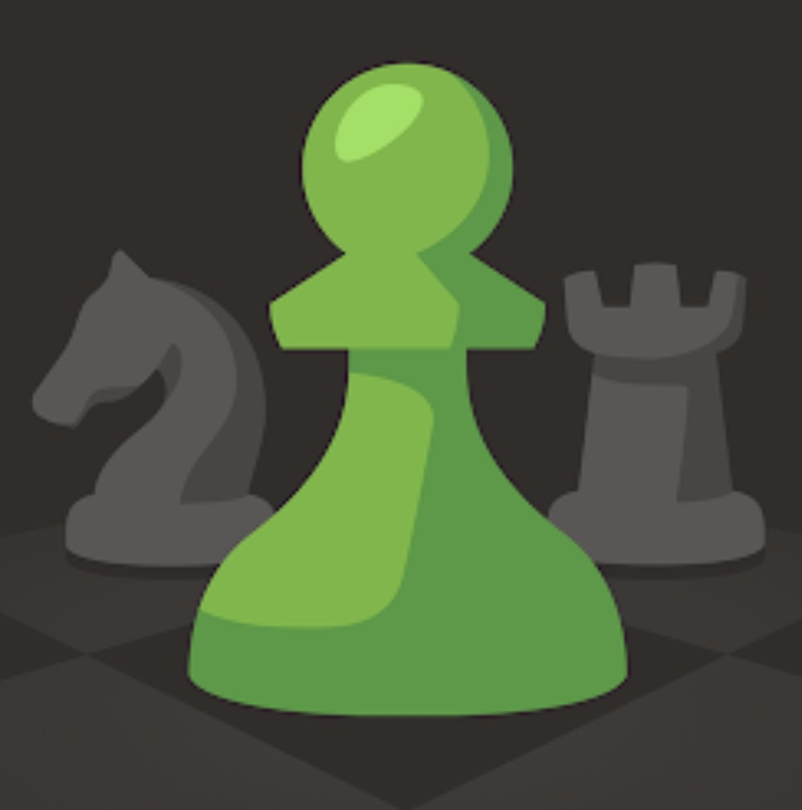
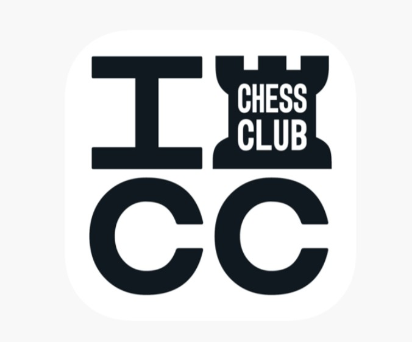

Chess.com es una de las plataformas de ajedrez más populares y utilizadas del mundo, reconocida por ofrecer una experiencia muy completa tanto para principiantes como para jugadores avanzados. Fundada en 2007, la página reúne a millones de usuarios que diariamente juegan partidas rápidas, blitz, bullet y clásicas contra rivales de diferentes países y niveles. Además de las partidas en línea, el sitio destaca por su enorme cantidad de herramientas educativas, como lecciones interactivas, ejercicios tácticos, análisis automáticos con motores de ajedrez, cursos impartidos por maestros internacionales y transmisiones en vivo de torneos importantes. La plataforma también cuenta con noticias actualizadas, foros de discusión, clubes, eventos comunitarios y modalidades especiales como Chess960, Puzzle Rush y partidas por equipos. Uno de los aspectos más destacados de Chess.com es su fuerte presencia en el ámbito competitivo y de entretenimiento, ya que organiza eventos con algunos de los mejores ajedrecistas del mundo y creadores de contenido especializados en ajedrez. Gracias a su interfaz moderna, su aplicación móvil y su enfoque tanto educativo como competitivo, Chess.com se ha convertido en un referente global para aprender, practicar y disfrutar el ajedrez en línea. Además, su accesibilidad para jugadores de todas las edades y niveles ha contribuido enormemente al crecimiento mundial del ajedrez durante los últimos años.
Lichess es una plataforma gratuita y de código abierto dedicada al ajedrez en línea, ampliamente valorada por la comunidad ajedrecística debido a su filosofía basada en la accesibilidad, la transparencia y la ausencia de publicidad invasiva. Creada en 2010 por Thibault Duplessis, Lichess permite jugar partidas en distintos ritmos y variantes, incluyendo bullet, blitz, rápidas, clásicas y modalidades alternativas como Crazyhouse, Antichess, Atomic Chess y King of the Hill. Uno de los mayores atractivos de la plataforma es que prácticamente todas sus funciones están disponibles de manera gratuita, incluyendo el análisis avanzado con motores de ajedrez, estudios interactivos, entrenamiento táctico, bases de datos de partidas y herramientas de aprendizaje. Lichess también destaca por su diseño limpio y minimalista, que facilita la experiencia de juego y permite concentrarse completamente en las partidas. Además, la plataforma organiza torneos constantes, arenas competitivas y eventos internacionales que reúnen a miles de jugadores simultáneamente. Debido a su naturaleza de software libre y a su financiamiento mediante donaciones, muchos jugadores consideran a Lichess una alternativa comunitaria y abierta frente a otras plataformas comerciales. Su gran estabilidad, velocidad y enfoque centrado en la comunidad la han convertido en una de las páginas más importantes y respetadas dentro del ajedrez moderno.

Internet Chess Club, conocido comúnmente como ICC, es uno de los servidores de ajedrez en línea más históricos y prestigiosos dentro de la comunidad ajedrecística internacional. Fundado en la década de 1990, ICC fue durante muchos años el principal punto de encuentro para jugadores profesionales, maestros internacionales y aficionados avanzados que buscaban competir en internet antes de la aparición de plataformas modernas como Chess.com y Lichess. El sitio ganó enorme reconocimiento debido a que numerosos campeones mundiales y grandes maestros utilizaron el servidor para entrenar, analizar y disputar partidas de alto nivel. ICC ofrece modalidades de juego en tiempo real, torneos, análisis de partidas y transmisiones de eventos importantes, además de contar con herramientas especializadas para entrenamiento y observación de encuentros profesionales. A diferencia de otras plataformas más modernas enfocadas en interfaces visuales y redes sociales, ICC mantiene un enfoque más tradicional y competitivo, dirigido principalmente a jugadores serios y experimentados. Aunque actualmente posee una comunidad más reducida en comparación con otras plataformas contemporáneas, continúa siendo valorado por muchos ajedrecistas veteranos debido a su historia, su nivel competitivo y su relevancia en el desarrollo del ajedrez en internet. ICC representa una parte importante de la evolución tecnológica del ajedrez digital y sigue siendo recordado como uno de los pioneros más influyentes en la práctica competitiva del ajedrez en línea.